Control and surface inventory
Every inconsistency found in the product's controls and surfaces on 2026-10-22, from origin/main at 417b646, against the last commit before the design-system build. Findings only; nothing here proposes a fix.
1. Controls: switches, tabs, chips, toggles, buttons, icon buttons, menu triggers 22
.subtab.core-link / .layout-tab: 30px high, padding 0 12 0 12, radius 5px, 13px/600, border 1/1/1/1 solid transparent, fill transparent. Manage's second row .subtab: 30px high, padding 0 12 0 12, radius 5px, 13px/600, border 1/1/1/1 solid transparent, fill #a8692a @28%. The two rows use the same height, padding, weight and the same selected fill (accent at 28%), so the section tab and the page tab inside it read as one level.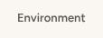
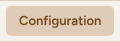
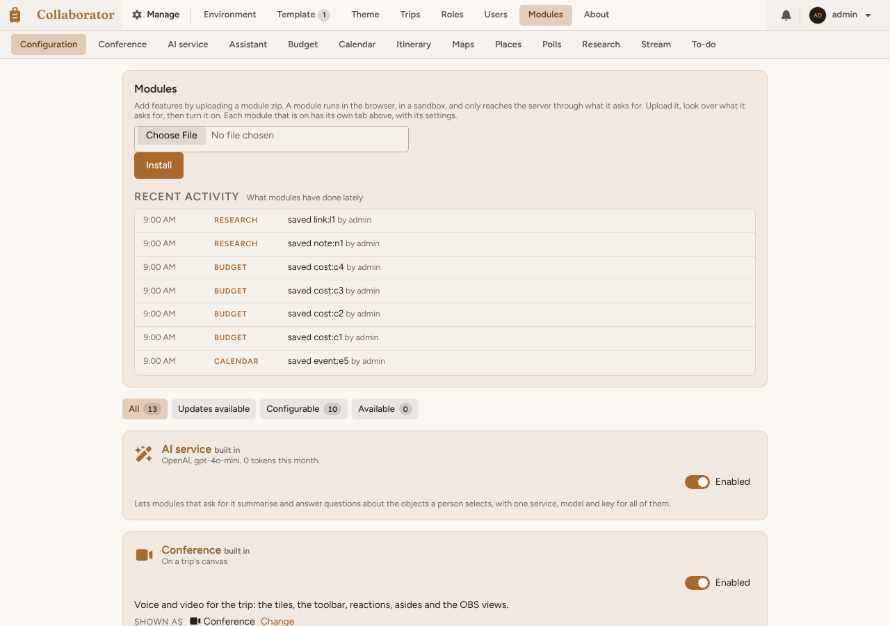
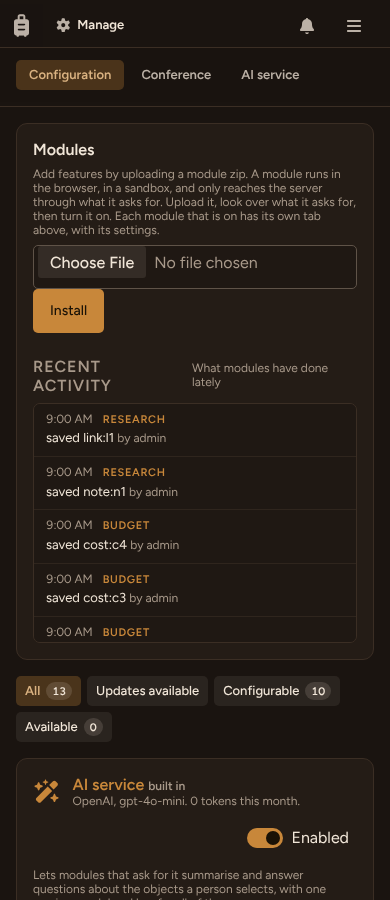
.tb-tab)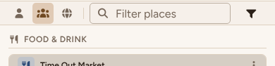
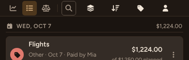
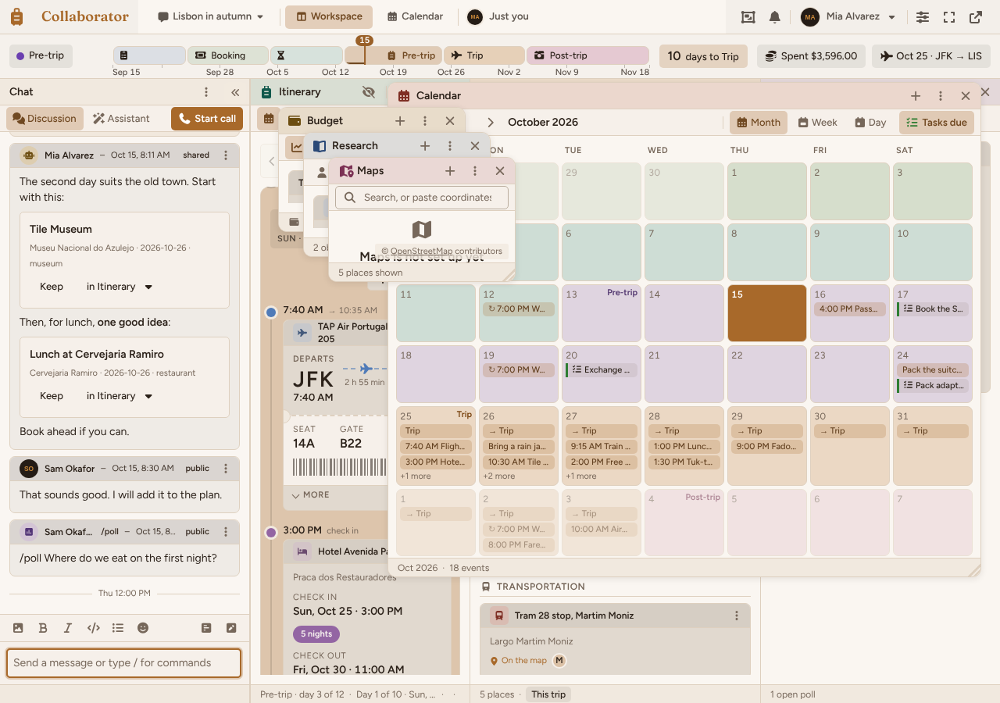
.setup-tab)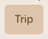
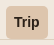
.dest-tab)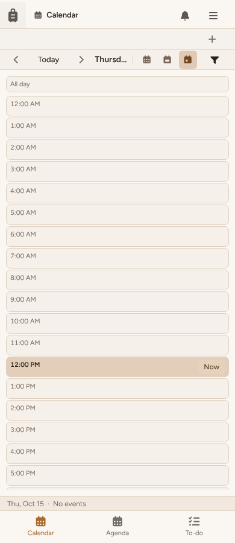
.sdk-chip).rs-chip 22px radius 5; Budget .chip-btn 28px pill with no border; Manage .filter-chip 30px pill.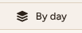
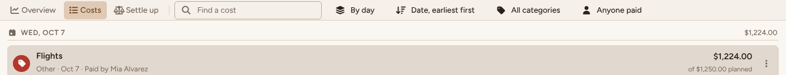
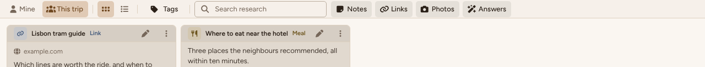
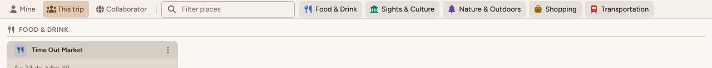
input.sdk-switch: 36×20, round. Theme default: a separate button[role=switch] with sun and moon icons (28px high, padding 4 6 4 6, radius 0px, 14px/400, border none, fill transparent). Auto: a 16px tick box inside a row filled with the accent tint, so a dozen tan bars fill the Theme page.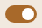
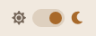
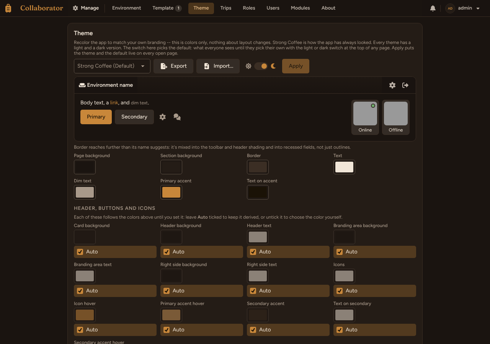
.btn: 38px high, padding 0 16 0 16, radius 5px, 14px/500, border 1/1/1/1 solid transparent, fill #a8692a. Small: 30px high, padding 0 12 0 12, radius 5px, 13px/500, border 1/1/1/1 solid transparent, fill #a8692a. The confirm button of a form is default on Manage > Theme and small on Set up. At 390 the default grows to 44px; small stays 30px.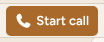
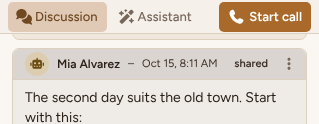
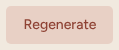
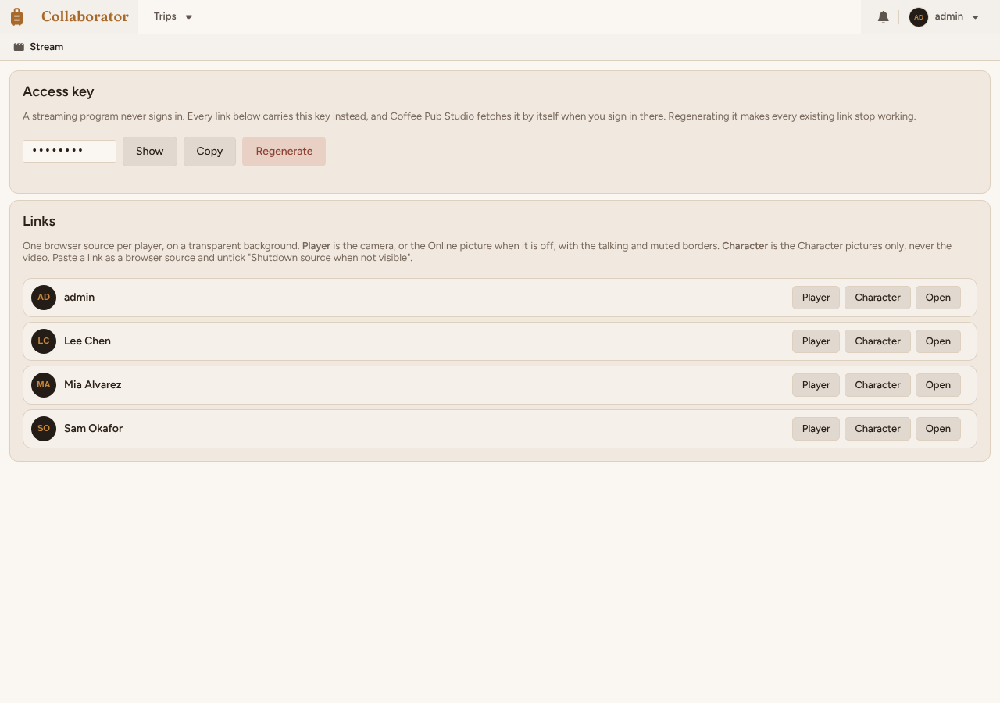
.sdk-more.mod-add, 20px on a module page, 28px on the canvas.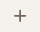
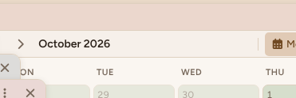
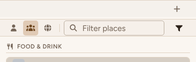
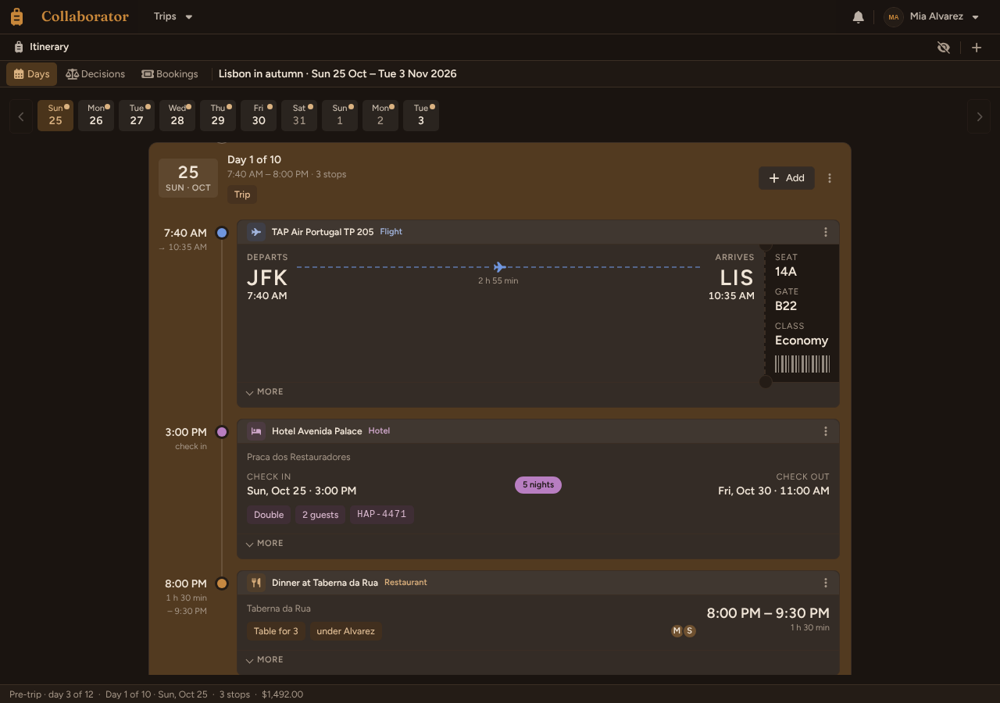
summary..sdk-more at 24px (messages), 28px (cards, canvas), 36px (Budget rows).#chat-views (Discussion / Assistant / Start call).tb-tab 30px, padding 0 8, radius 5, 13px/500; selected = accent 28% tint (#e0cab5 on the column, contrast 1.31), unselected transparent. Start call: .btn.btn-small.btn-primary 30px, padding 0 8, radius 5, 13px/600, solid accent (#a8692a, 3.7 against the row). Same height, radius and side padding as the tabs, so it reads as a third segment set apart only by a stronger fill and heavier weight; there is no divider or gap rule between the switch and the action. Against other switches: the same .tb-tab as every module view switch (30px, 0 8, 500); top-bar tabs use 0 12 and 600. In a call, Start call leaves the row and the row holds the two tabs only (looked at)..btn-accent 22px, padding 5 10, 13px/600, the same solid accent fill and white text: the selected view and the action were drawn the same.2. Search fields 9
#module-toolbar. Other controls in that row: Mine (left), This trip (left), Collaborator (left), Food & Drink (right), Sights & Culture (right), Nature & Outdoors (right), Shopping (right), Transportation (right). Between the view switch (left) and the category chips (right). At 390: 200px wide, placeholder 16px.#module-toolbar. Other controls in that row: Overview (left), Costs (left), Settle up (left), By day (right), Date, earliest first (right), All categories (right), Anyone paid (right). Between the view switch and four quiet sort/filter buttons. At 390 it folds to a 30px bordered icon box beside borderless icons. At 390: 30px wide, placeholder 16px.#module-toolbar. Other controls in that row: Mine (left), This trip (left), Cards (left), List (left), Tags (left), Notes (right), Links (right), Photos (right), Answers (right). After the scope switch, the layout switch and Tags; kind chips to its right. At 390 it folds to a 30px icon box. At 390: 30px wide, placeholder 16px.#module-toolbar. Other controls in that row: none. Alone at the left of the toolbar. The placeholder is cut off at 240px ("Search, or paste coordinates or"); looked at. At 390: 240px wide, placeholder 16px.public/ for search inputs)..sdk-search.sdk-search-small.tb-search)3. Bar insets against the content below 6
4. Surfaces: shadows, borders, card heads, icon squares, themes 8
box-shadow values in the stylesheets then, 35 now (read as code)..sdk-card-head) on every object card in Places (5), Itinerary (3), Research (2), Polls (1), Budget Overview (3). Budget Costs rows, Calendar agenda rows, Home trip cards and Manage panels have no band. Before: no card had a head band.What differs, measured (table below): (1) no element has a shadow, on either side. (2) Chat messages and module cards share the hairline border, the 7px radius, a 31px head band with padding 0 2 0 12 and a hairline under it, and a 12px/600 title. (3) The chat message head band is the strongest step: 1.29 / 1.40 against its body, where the module card head is 1.11 / 1.18; the message body itself is a light 5% text tint only 1.05 off the column, where a module card body is 1.30 / 1.33 off the page. So in chat the head carries the level and the body melts into the column; in modules the whole card lifts and the band is faint. (4) Icons: chat portraits are 24px round tints; Research and Itinerary object cards 24px squares, radius 5; the Polls card and the Itinerary day card have no icon square. (5) The Itinerary day card is a different object: radius 11 (not 7), an 82px head with padding 12 12 4 12 and no hairline, 22px title, and an accent-tinted fill (#ddc5ac / #523a20) instead of the neutral card fill. (6) The chat object card inside a message (Tile Museum) has no head band, radius 5, padding 12, field fill. (7) The call: a title bar on the page colour (96%), a 270×152 tile with a hairline and radius 7 on black, and a controls bar with a top hairline on the field fill, round 30px buttons; it has no card, band or icon square at all.
| Element | Shadow | Border | Radius | Padding (box) | Fill (CSS) | Head band | Icon square | Title | Box vs surround, light / dark (pixels) | Head vs body, light / dark |
|---|---|---|---|---|---|---|---|---|---|---|
chat message (plain)div.message.is-chat.history | none | 1/1/1/1 solid #ded0bf | 7px | 0px 0px 0px 0px | #2b2119 @5% | 31px band, padding 0px 2px 0px 12px, fill #2b2119 @11%, 1px solid #ded0bf | 24x24, radius 999px, fill #d5cdc3 | 12px/600 | 1.049 / 1.064 | 1.227 / 1.312 |
chat messagediv.message.private-ai.msg-ai | none | 1/1/1/1 solid #ded0bf | 7px | 0px 0px 0px 0px | #2b2119 @5% | 31px band, padding 0px 2px 0px 12px, fill #2b2119 @11%, 1px solid #ded0bf | 24x24, radius 999px, fill #ddcdb0 | 12px/600 | 1.052 / 1.048 | 1.288 / 1.396 |
chat object cardarticle.chat-object | none | 1/1/1/1 solid #ded0bf | 5px | 12px 12px 12px 12px | #f6f0e9 | none | none | 14px/600 | 1.049 / 1.064 | – |
call tilediv.tile.mirror | none | 1/1/1/1 solid #ded0bf | 7px | 0px 0px 0px 0px | #000000 | none | none | 11px/600 | not measured (the crop is mostly a picture or nested cards) | – |
call title barheader.side-column-call-head | none | 0/0/1/0 none #2b2119 | 0px | 0px 40px 0px 12px | #faf6f1 @96% | none | none | – | 1.046 / 1.002 | 1.0 / 1.0 |
call controls bardiv.mod-bar.video-bar | none | 1/0/0/0 solid #ded0bf | 0px | 0px 0px 0px 0px | #f6f0e9 | none | none | 11px/600 | 1.051 / 1.041 | – |
Research cardarticle.sdk-card-banded.rcard | none | 1/1/1/1 solid #ded0bf | 7px | 0px 0px 0px 0px | #e1d9cf | 31px band, padding 0px 2px 0px 12px, fill #d6cec4, 1px solid #ded0bf | 24x24, radius 5px, fill #c7c8cb | 12px/600 | 1.299 / 1.332 | 1.114 / 1.178 |
Itinerary day cardsection.sdk-card.sdk-day.in-phase | none | 1/1/1/1 solid #ded0bf | 11px | 0px 0px 0px 0px | #ddc5ac | 82px band, padding 12px 12px 4px 12px, fill #ddc5ac, 0px none #2b2119 | none | 22px/600 | not measured (the crop is mostly a picture or nested cards) | 1.187 / 1.294 |
Itinerary object cardarticle.sdk-card-banded.card.pass | none | 1/1/1/1 solid #ded0bf | 7px | 0px 0px 0px 0px | #e1d9cf | 31px band, padding 0px 2px 0px 12px, fill #d6cec4, 1px solid #ded0bf | 24x24, radius 5px, fill #c7c8cb | 12px/600 | 1.187 / 1.294 | 1.114 / 1.178 |
Polls cardarticle.sdk-card-banded.poll | none | 1/1/1/1 solid #ded0bf | 7px | 0px 0px 0px 0px | #e1d9cf | 31px band, padding 0px 2px 0px 12px, fill #d6cec4, 1px solid #ded0bf | none | 12px/600 | 1.299 / 1.332 | 1.114 / 1.178 |
5. Hierarchy: screens with little or no level difference 6
Gallery: every screen shot, before and now, Strong Coffee
Each screen at 1280 and 390, light and dark. Click to open full size.
home-member
manage-modules
manage-theme
manage-users
profile-profile
calendar-month

calendar-todo